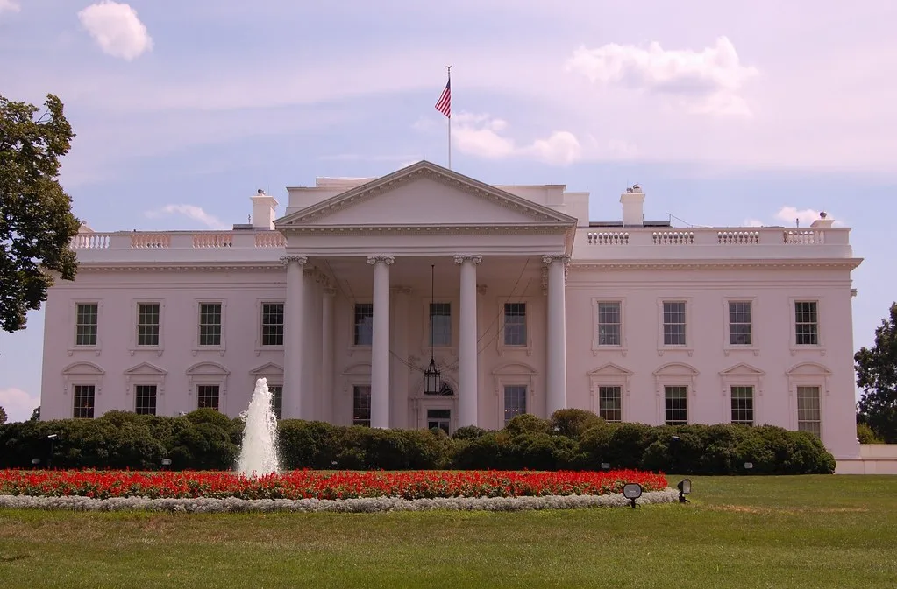

미국의 3분기 경제성장률이 처음 발표된 것보다 크게 높아진 것으로 수정되자, 도널드 트럼프 미국 대통령이 선거 전에 나온 수치가 조작됐다며 조사를 요구하고 나섰다. 미 상무부는 이번 주 올해 3분기 실질 국내총생산(GDP) 성장률 잠정치가 연율 기준 4.3%로 집계됐다고 발표했다. 지난달 공개된 속보치 3.4%보다 0.9%포인트 높은 수치로, 3년 만에 가장 높은 수준이다.
상무부는 상향 조정의 배경으로 소비 지출과 투자 증가율이 처음 추산했던 것보다 높게 나타난 점을 꼽았다. 미국 경제의 가장 큰 축인 가계 소비가 예상보다 탄탄했고, 기업 투자도 힘을 보탰다는 의미다. 2분기 성장률이 2.2%였던 점을 감안하면, 3분기 들어 성장 속도가 눈에 띄게 빨라진 셈이다. 미국의 GDP 성장률은 전 분기 대비 증가 속도를 1년 동안 이어간다고 가정해 환산한 연율로 발표되는데, 4%대는 잠재성장률로 평가되는 수준을 크게 웃도는 높은 수치로 받아들여진다.
트럼프 대통령은 현지시간 26일 자신의 소셜미디어 트루스소셜에 글을 올려 선거 전에 발표된 경제지표가 가짜였고 당국이 이를 뒤늦게 고쳤다는 취지로 주장하며 즉각적인 조사를 촉구했다. 이달 초 치러진 중간선거를 앞두고 자신과 공화당에 불리하도록 성장률이 의도적으로 낮게 발표됐다는 주장이다. 다만 통계가 고의로 조작됐다는 주장을 뒷받침할 구체적인 근거는 제시하지 않았다.
흥미로운 점은 같은 날 트럼프 대통령이 이 수치를 경제 호조의 증거로도 적극 내세웠다는 것이다. 그는 3분기 성장률이 전문가 예상을 뛰어넘었고 2분기의 거의 두 배에 달한다며 미국 경제가 폭발적으로 성장하고 있다고 강조했다. 한쪽에서는 수정된 수치를 자신의 성과로 홍보하면서, 다른 한쪽에서는 그 이전 수치를 문제 삼는 모양새가 된 것이다.
경제 전문가들은 GDP 수치가 수정되는 것 자체는 지극히 일반적인 절차라고 설명한다. 미국 상무부 경제분석국(BEA)은 분기 GDP를 속보치, 잠정치, 확정치의 세 단계로 나눠 발표한다. 첫 발표 시점에는 확보되지 않았던 소비·투자·무역 관련 자료가 뒤늦게 들어오면 이를 반영해 숫자를 고치는 구조다. 수정치 발표 일정도 정치 일정과 상관없이 미리 정해져 있다. 속보치와 잠정치 사이에 1%포인트 가까운 차이가 나는 것이 흔한 일은 아니지만, 표본 자료가 크게 보강되는 과정에서 과거에도 비슷한 폭의 수정이 나온 적이 있다는 것이 일반적인 설명이다.

그래서 이번 논란을 두고 통계 기관의 독립성에 대한 우려도 나온다. 대통령이 근거 없이 공식 통계의 신뢰성을 공격하면, 시장과 기업이 의사결정의 기준으로 삼는 지표 전반에 대한 불신이 커질 수 있기 때문이다. 경제지표가 불리하게 나올 때마다 통계를 탓하는 행태가 반복되고 있다는 비판적 시각의 보도도 잇따랐다.
시장의 관심은 이제 앞으로 나올 3분기 확정치와 4분기 흐름으로 옮겨가고 있다. 성장세가 이어진다면 미국 경기에 대한 낙관론이 힘을 얻겠지만, 통계 신뢰성을 둘러싼 정치적 공방이 길어질 경우 금융시장의 불확실성 요인이 될 수 있다. 미국 경기의 향방이 수출 비중이 큰 한국 경제에도 직접적인 영향을 주는 만큼 추가 지표와 논란의 전개를 지켜볼 필요가 있다.